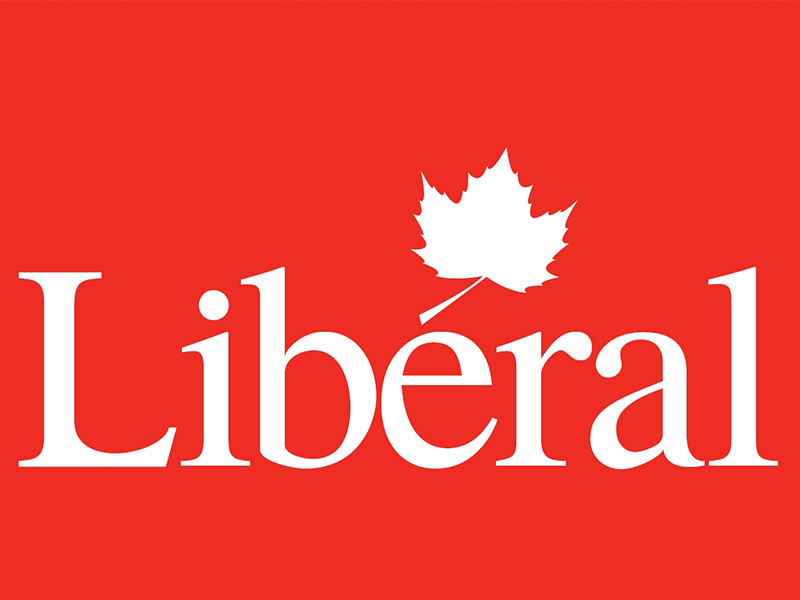
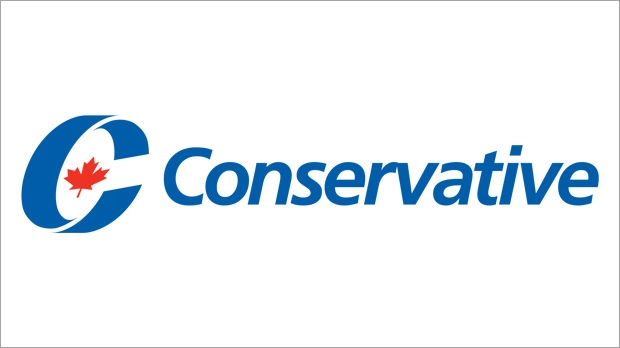

Argument for Election parties
Team_member1 Sarthak
(liberal party)

The Liberal Party of Canada is the oldest and longest-serving political party in Canada. The party has dominated federal politics for much of Canada's history holding power for almost 69 years in the 20th century.
For the better future of canada i think we should support liberal.
Each province and one territory in Canada has its own Liberal Party
liberal party is the best :)
Team_member2 Sabnit
(conservative party)

The Conservative Party of Canada colloquially known as the Tories, is a federal political party in Canada. It was formed in 2003 from the multiple right-wing parties which had existed in Canada for over a century, historically grouped into two camps, "Red Tories" and "Blue Tories".The party sits at the centre-right to the right-wing of the Canadian political spectrum, with the Liberal Party of Canada positioned centre to centre-left.Like their federal Liberal rivals, the party is defined as a "big tent", welcoming a broad variety of members.
conservative is far better than liberal :)
i am sure that conservative parties will definately win
For the better future of canada i think we should support conservatives.